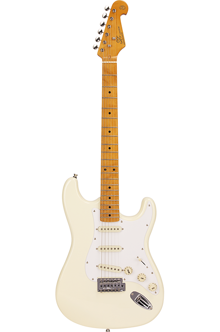
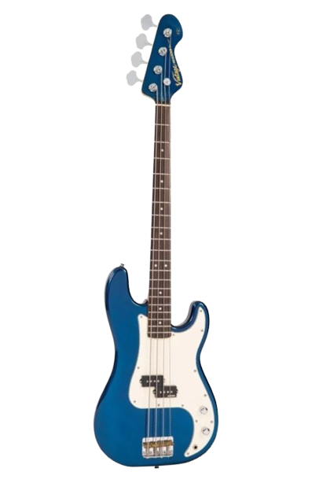
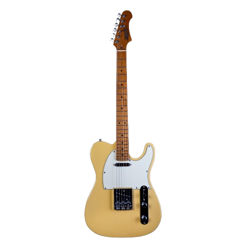
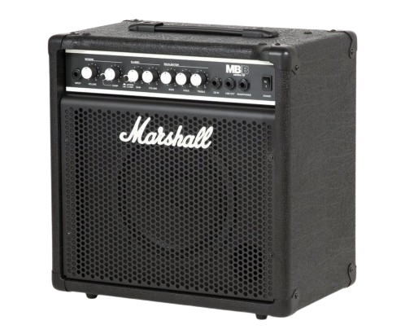
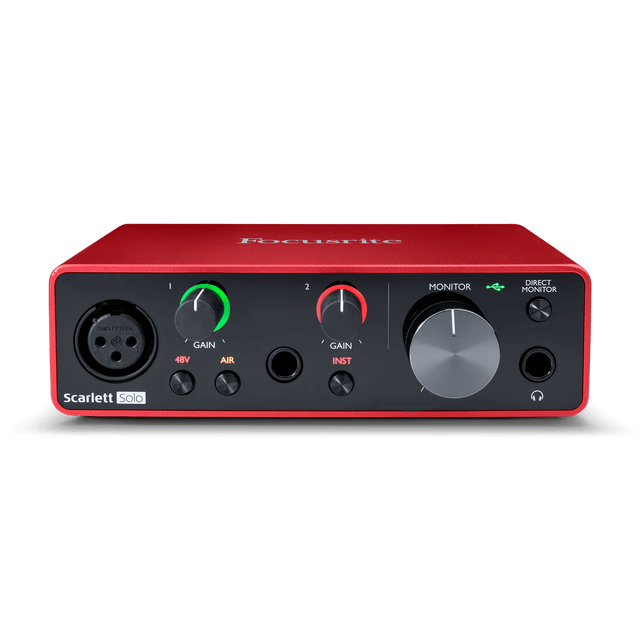
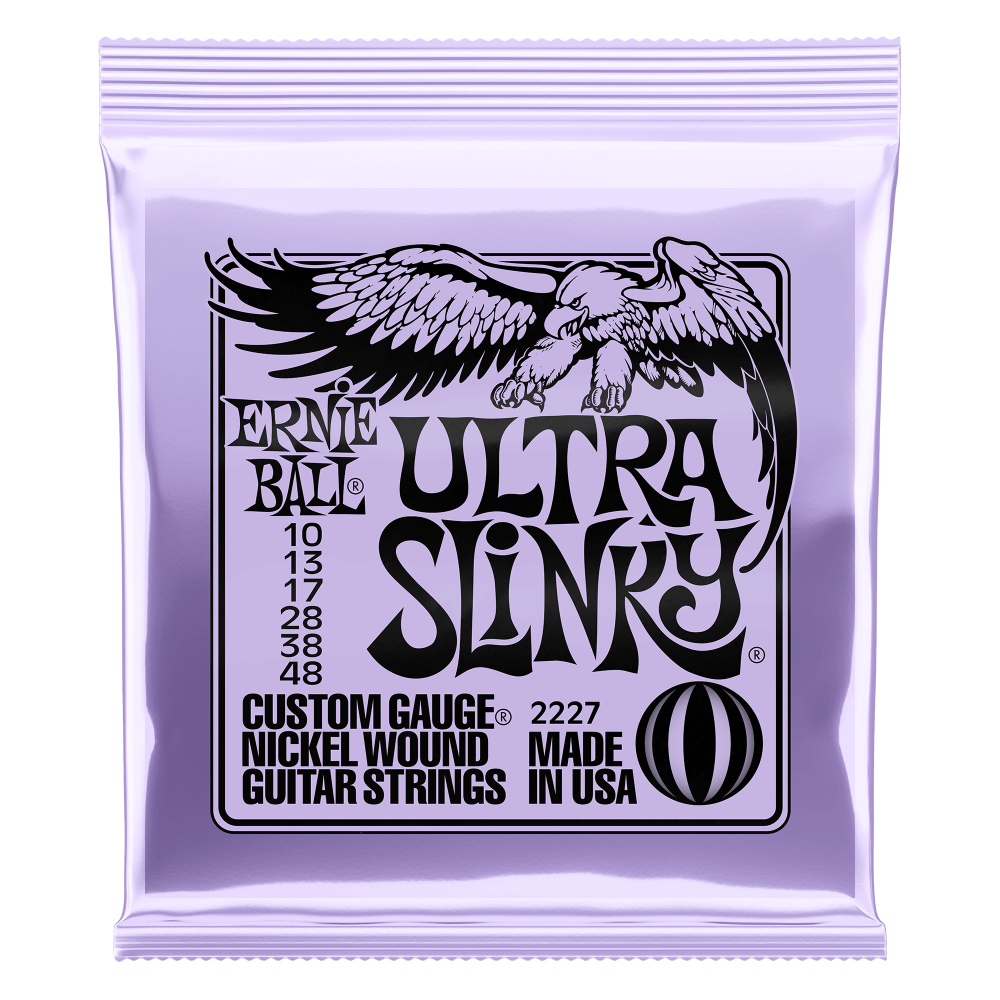
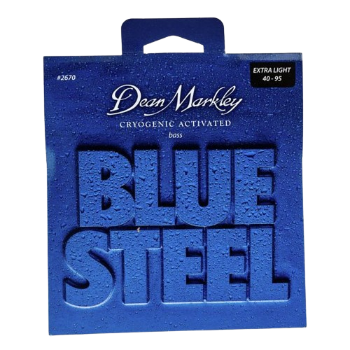

JuffBass's Equipment
SX LTD3
Bass Guitar
- Scale: 864mm
- Body: Ultra-Lightweight Swamp Ash 2-Piece Center Joined
- Neck: Selected 1-Piece Tiger Maple
- Neck Reinforcement: Engineered Rosewood or Rosewood
- Truss Rod: 2 Way Truss Rod
- Fingerboard: Fingerboard and Neck are in 1-Piece Tiger Maple
- Fingerboard Binding: ABS, Ivory
- Frets: Nickel
- Number of Frets: 20
- Position Marks: Real Abalone Inlayed
- Machine Heads: Chrome, High Mass Machine Heads
- Nut: Synthetic Bone
- Nut Width: 38mm
- Bridge: Chrome
- Strings: D'Addario
- Pickups: 2 x Single Coil
- Controls: 2V. 1T.
- Pickguard: Pearloid
- Color: Natural
- Finish: Glossy

SST57+/VWH Stratocaster
Electric Guitar
- Scale: 648mm
- Body: Solid Basswood
- Neck: Selected Canadian Maple
- Neck Reinforcement: Engineered Rosewood or Rosewood
- Truss Rod: 2 Way Truss Rod
- Fingerboard: Canadian Maple
- Frets: Nickel
- Number of Frets: 21
- Position Marks: Dots Inlayed, Black
- Machine Heads: Die-Cast, Chrome
- Nut: Synthetic Bone
- Nut Width: 42mm
- Bridge: Chrome
- Strings: D'Addario
- Pickups: 3 x Single Coil
- Pickup Configuration: S-S-S
- Controls: 1V. 1T., 3 Way Switch
- Pickguard: White
- Color: Vintage White
- Finish: Glossy

Vintage V4 Reissued
Bass Guitar
- Body: Alder
- Neck: Hard Maple Bolt On, Vintage ‘soft C’ profile
- Fingerboard: Rosewood, 12" radius
- Scale Length: 34" / 864mm
- Frets: 20 Medium Jumbo
- Neck Inlays: Pearloid dot
- Nut: 42mm Graphtech NuBone
- Bridge: Wilkinson compensated, four brass saddle
- Pickups: Wilkinson WOBP single coil
- Controls: Independent master Volume and Tone
- Machine Heads: Wilkinson WJBL200
- Headstock: Classic Vintage design

JET JT-300
Electric Guitar
- Machine Head: Chrome
- Neck: Canadian roasted maple
- Shape: Modern C
- Fretboard: Roasted Maple or Rosewood
- Radius: 9.5″
- Nut Width: 1.65″
- Nut: Bone
- Truss Rod: Double action
- String Scale: 25.5″
- Number of Frets: 22
- Body: Basswood
- Pickup: SS Ceramic
- Bridge: Fixed
- Controls: 1V, 1T, 3 way switch
- Hardware: Chrome

Marshall MB 15
Bass Amplifier
- Power: 15 Watt
- Speaker: 1x8"
- Channels: 2
- Dimensions: 381mm x 368mm x 241mm
- Cabinet: Ported
- Reinforcement: Metal reinforced corners
- Handle: Top handle
- Input Jack: 1/4"
- Power Switch: Yes

Scarlett Solo [3rd Gen]
USB audio interface
- Inputs: Two (1 x 3rd Generation mic pre, 1 switchable line/inst input)
- Outputs: Two balanced outputs
- Air Mode: Enhances vocals and acoustic instruments
- Converters: 24-bit/192 kHz
- Gain Halos: Simple level setting
- Direct Monitor: Latency-free monitoring
- Connectivity: USB-C, compatible with MacOS, Windows, and iPadOS
- Included Software: Ableton Live Lite, three months of Pro Tools Artist, Hitmaker Expansion
- Included Plugins: Antares, Softube, Landr, XLN Audio, and more

Alesis V61 USB-MIDI Keyboard
- Keys: 61 full-sized, square-front
- Pads: 8 velocity- and pressure-sensitive backlit pads
- Assignable Controls: 4 knobs, 4 buttons
- Octave Controls: Octave Up and Down buttons
- Expression: Pitch and modulation wheels
- Feedback: Illuminated buttons and knobs
- Connectivity: USB power and USB-MIDI for Mac and PC
- Included Software: Ableton Live Lite 9, Xpand!2 by AIR Music Tech

Ultra Slinky Nickel Wound
Electric Guitar Strings

Blue Steel
Bass Guitar Strings
